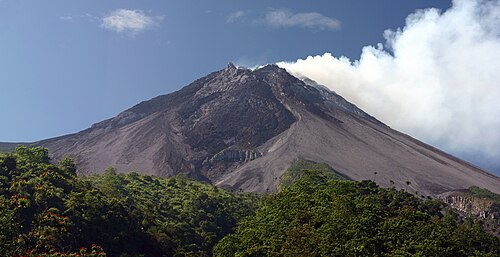

Gunung Merapi

Gunung Merapi adalah salah satu gunung berapi paling aktif dan berbahaya di dunia, yang terletak di perbatasan Daerah Istimewa Yogyakarta dan Jawa Tengah. Memiliki ketinggian sekitar 2.968 mdpl, gunung bertipe stratovolcano ini terkenal sering mengalami erupsi dan guguran lava.
tentang merapi
Di balik aktivitas vulkaniknya yang tinggi, lereng Merapi menawarkan pesona alam yang luar biasa subur dan daya tarik wisata. Wisatawan dapat menikmati keindahan alam serta situs edukasi sejarah letusan, seperti di Museum Sisa Hartaku. Selain itu, area ini juga sarat akan nilai budaya dan mitos yang menjadikannya bagian penting dari kehidupan masyarakat.
Gunung Merapi merupakan salah satu gunung berapi paling aktif di dunia yang menjulang setinggi 2.930 mdpl di perbatasan Jawa Tengah dan Daerah Istimewa Yogyakarta. Terbentuk akibat aktivitas subduksi lempeng, gunung ini terkenal dengan karakteristik erupsinya yang khas, termasuk luncuran awan panas bersuhu ekstrem yang sering disebut "wedhus gembel" oleh masyarakat setempat.

video tentang merapi
Dokumenter ini menggambarkan bagaimana masyarakat setempat hidup berdampingan dengan Merapi, memandangnya bukan sekadar ancaman bencana, melainkan sebagai pemberi kehidupan dan pelindung budaya.
Melalui pendekatan kearifan lokal, video ini mengajak penonton untuk memahami pentingnya menjaga keseimbangan alam dan menghormati tradisi yang telah diwariskan turun-temurun.
https://youtu.be/F4K5NzGGEZ4?si=z7XswSW5sVs7enGvdokumentasi merapi
sumber dari dokumentasi https://id.wikipedia.org/wiki/Gunung_Merapi.
fakta menarik hubungan Gunung merapi dan Yogyakarta
Hubungan antara Gunung Merapi dan Yogyakarta melampaui batas geografis dan mengakar kuat dalam konsep kosmologi Jawa yang sakral melalui garis imajiner yang dikenal sebagai Sumbu Filosofi Yogyakarta. Garis lurus spiritual ini membentang sempurna dari utara ke selatan, menghubungkan Gunung Merapi sebagai simbol elemen api dan spiritualitas tinggi, Keraton Yogyakarta sebagai pusat kediaman manusia atau raja, hingga Pantai Parangkusuma di Laut Selatan yang mewakili elemen air dan dunia spiritual laut. Bagi masyarakat setempat, aktivitas vulkanik Merapi tidak sekadar dipandang sebagai bencana alam mekanis belaka, melainkan sebuah bentuk komunikasi spiritual dari para leluhur atau penguasa gaib "Keraton Merapi" yang dipercaya dipimpin oleh figur mistis seperti Eyang Merapi dan Kyai Sapujagad. Kehadiran sosok juru kunci ikonik seperti mendiang Mbah Maridjan mempertegas manifestasi hubungan ini, di mana tugas utama mereka bukan menantang sains modern, melainkan menjaga harmoni, merawat tradisi labuhan (persembahan korban), serta menuntun warga agar tetap hidup selaras dan menghormati alam sekitar. Ketika Merapi batuk atau meluncurkan awan panas (wedhus gembel), masyarakat Yogyakarta sering kali merefleksikan peristiwa tersebut sebagai pengingat moral untuk melakukan introspeksi diri (keselarasan hidup), sehingga kedekatan emosional ini menciptakan ketangguhan lokal yang unik di mana warga lereng gunung tidak pernah membenci Merapi, melainkan menganggapnya sebagai pelindung sekaligus pemberi berkah kesuburan tanah yang menghidupi peradaban Yogyakarta selama berabad-abad.